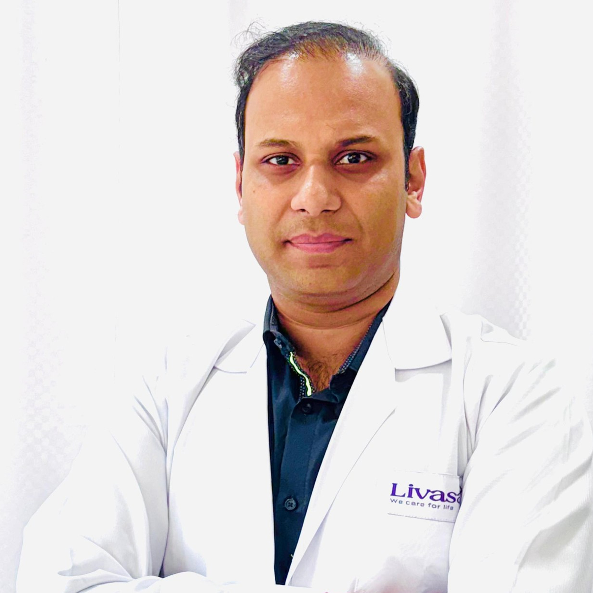

About Dr. Puneet Kumar
A compassionate and dedicated Consultant Physician committed to excellence in patient care and well-being.

My Journey in Medicine
With over 15 years of experience in internal medicine, Dr. Puneet Kumar has established himself as a trusted and respected Consultant Physician. His journey began with a profound desire to make a tangible difference in people's lives through dedicated healthcare. He specializes in the management of chronic diseases, with a particular focus on diabetes, hypertension, and cardiovascular health.
Dr. Kumar is known for his holistic approach, combining evidence-based medicine with personalized care plans that empower patients to take control of their health. He believes in building lasting relationships with his patients, founded on trust, empathy, and open communication.
Education & Professional Milestones
Fellowship in Diabetes Management
Apollo Hospital, New Delhi | 2012
Completed an advanced fellowship focusing on comprehensive diabetes care and modern treatment modalities.
MD, Internal Medicine
All India Institute of Medical Sciences (AIIMS) | 2010
Gained extensive clinical experience and expertise in diagnosing and managing a wide range of complex medical conditions.
MBBS
Maulana Azad Medical College | 2006
Laid the foundational knowledge and skills for a career dedicated to medical excellence.
Philosophy & Affiliations
My Patient Care Philosophy
"I believe in a patient-first approach, where empathy and understanding are as crucial as clinical expertise. My goal is to empower every patient with the knowledge and support they need to lead healthier, fuller lives. I am not just treating a disease; I am caring for a person."
Professional Affiliations
- verified Member, Indian Medical Association (IMA)
- verified Fellow, Research Society for the Study of Diabetes in India
- verified Member, Association of Physicians of India (API)